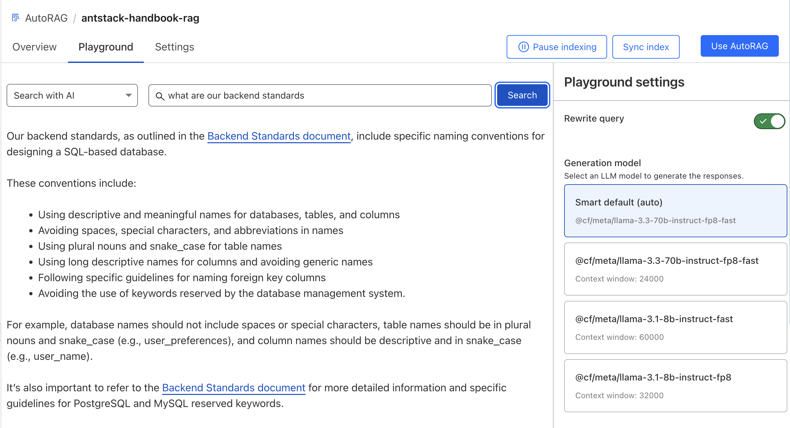
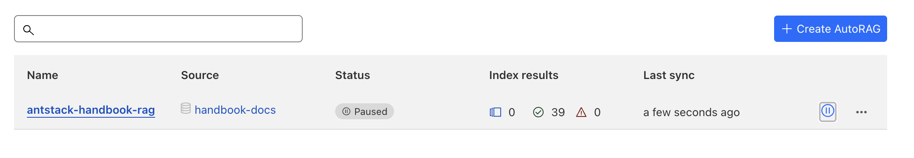

Cloudflare has introduced AutoRAG, a fully managed Retrieval-Augmented Generation (RAG) service that enables developers to create intelligent, context-aware applications grounded in proprietary data. This guide walks through the process of building an AI-powered search bot using AutoRAG and the Cloudflare developer platform.
What is AutoRAG?
AutoRAG abstracts the complexity of constructing RAG pipelines by integrating key components:
- Data Storage: Supports storing and fetching data from R2 buckets. Web Crawler and D1 Database integrations are planned.
- Vector Database: Converts documents into vector embeddings stored in Cloudflare Vectorize.
- AI Models: Utilizes Workers AI for tasks such as embedding generation, query rewriting, and response generation.
- API Management: Uses Cloudflare AI Gateway for usage monitoring and caching.
By automating data ingestion, indexing, and querying, AutoRAG lets developers concentrate on building smarter applications without managing backend infrastructure.
Setting Up an AutoRAG Pipeline
Step 1: Prepare Your Data
Let's say you have a collection of .mdx files containing onboarding guides, company standards, and organizational policies. We'll use these files to build a searchable AI bot.
First, create an R2 bucket in the Cloudflare dashboard and upload your .mdx files.
Step 2: Create an AutoRAG Instance
- In the Cloudflare Dashboard, navigate to AI > AutoRAG.
- Click Create AutoRAG.
- Fill in the configuration:
- Data Source: Select your R2 bucket.
- Embedding Model: Choose a default or specific model.
- LLM: Pick the language model for response generation.
- AI Gateway: Assign or create an AI Gateway instance to monitor and reduce cost through caching.
- Click Create to provision your AutoRAG instance.
AutoRAG automatically indexes your data into vector embeddings, stored in Vectorize. Indexing time varies based on dataset size, typically taking up to 20 minutes.
Step 3: Test the Search Bot
After indexing, navigate to the Playground to interact with your search bot.
- Search: Executes a keyword search, returning file paths.
- Search with AI: Uses an LLM to return a summarized answer based on relevant file matches.

Step 4: Integrate with Your Application
Click the Use AutoRAG button to explore integration options:
REST API
AutoRAG exposes a REST API for integration with any app. Creating an API key enables authentication. Avoid exposing this key in client-side code to mitigate security risks.
Workers Integration (Node.js Example)
If you're using Cloudflare Workers, you can bind AutoRAG directly into your code via Wrangler config:
{
"$schema": "node_modules/wrangler/config-schema.json",
"name": "handbook-search-worker",
"main": "src/index.ts",
"compatibility_date": "2025-04-24",
"observability": {
"enabled": true
},
"ai": {
"binding": "AI"
}
}Use the binding to call AutoRAG within your Worker:
const answer = await env.AI.autorag('my-rag').aiSearch({
query: 'What is AutoRAG?'
});Enable streaming responses with:
const answer = await env.AI.autorag('my-rag').aiSearch({
query: 'What is AutoRAG?',
stream: true
});Step 5: Auto-Sync Indexes
AutoRAG continuously checks for changes or additions in your R2 bucket and re-indexes content at regular intervals. You can adjust sync frequency or disable syncing via the dashboard. Manual syncing is also supported via the Sync Index button.

Pricing and Limits
AutoRAG is currently in open beta and free to enable. However, its functionality relies on several underlying Cloudflare services which may incur charges:
- R2 (Storage): 10 GB free, then $0.015/GB-month.
- Vectorize (Vector DB): Free up to 5M stored and 30M queried vector dimensions. Charged at $0.01 per million for queries vector dimensions and $0.05 per 100 million stored vector dimensions
- Workers AI: Free up to 10,000 neurons/day. Model-specific rates apply beyond that.
- AI Gateway: Free at present.
Each account can create up to 10 AutoRAG instances, each supporting 100,000 files with max single file size of 4 MB (Plain text) / 1 MB (Rich format).
This post was originally published on AntStack's Blog.